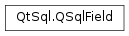

QSqlField¶
Synopsis¶
Functions¶
- def
__eq__(other) - def
__ne__(other) - def
clear() - def
defaultValue() - def
isAutoValue() - def
isGenerated() - def
isNull() - def
isReadOnly() - def
isValid() - def
length() - def
name() - def
precision() - def
requiredStatus() - def
setAutoValue(autoVal) - def
setDefaultValue(value) - def
setGenerated(gen) - def
setLength(fieldLength) - def
setName(name) - def
setPrecision(precision) - def
setReadOnly(readOnly) - def
setRequired(required) - def
setRequiredStatus(status) - def
setSqlType(type) - def
setTableName(tableName) - def
setType(type) - def
setValue(value) - def
tableName() - def
type() - def
typeID() - def
value()
Detailed Description¶
The
PySide2.QtSql.QSqlFieldclass manipulates the fields in SQL database tables and views.
PySide2.QtSql.QSqlFieldrepresents the characteristics of a single column in a database table or view, such as the data type and column name. A field also contains the value of the database column, which can be viewed or changed.Field data values are stored as QVariants. Using an incompatible type is not permitted. For example:
field = QSqlField("age", QVariant.Int) field.setValue(QPixmap()) # WRONGHowever, the field will attempt to cast certain data types to the field data type where possible:
field = QSqlField("age", QVariant.Int) field.setValue(QString("123")) # casts QString to int
PySide2.QtSql.QSqlFieldobjects are rarely created explicitly in application code. They are usually accessed indirectly throughPySide2.QtSql.QSqlRecords that already contain a list of fields. For example:query = QSqlQuery() ... record = query.record() field = record.field("country")A
PySide2.QtSql.QSqlFieldobject can provide some meta-data about the field, for example, itsPySide2.QtSql.QSqlField.name(), variantPySide2.QtSql.QSqlField.type(),PySide2.QtSql.QSqlField.length(),PySide2.QtSql.QSqlField.precision(),PySide2.QtSql.QSqlField.defaultValue(), typeID(), and itsPySide2.QtSql.QSqlField.requiredStatus(),PySide2.QtSql.QSqlField.isGenerated()andPySide2.QtSql.QSqlField.isReadOnly(). The field’s data can be checked to see if itPySide2.QtSql.QSqlField.isNull(), and itsPySide2.QtSql.QSqlField.value()retrieved. When editing the data can be set withPySide2.QtSql.QSqlField.setValue()or set to NULL withPySide2.QtSql.QSqlField.clear().See also
-
class
PySide2.QtSql.QSqlField(other)¶ -
class
PySide2.QtSql.QSqlField([fieldName=""[, type=QVariant.Invalid]]) -
class
PySide2.QtSql.QSqlField(fieldName, type, tableName) Parameters: - other –
PySide2.QtSql.QSqlField - type –
PySide2.QtCore.QVariant::Type - fieldName – unicode
- tableName – unicode
Constructs a copy of
other.Constructs an empty field called
fieldNameof variant typetype.See also
PySide2.QtSql.QSqlField.setRequiredStatus()PySide2.QtSql.QSqlField.setLength()PySide2.QtSql.QSqlField.setPrecision()PySide2.QtSql.QSqlField.setDefaultValue()PySide2.QtSql.QSqlField.setGenerated()PySide2.QtSql.QSqlField.setReadOnly()This is an overloaded function.
Constructs an empty field called
fieldNameof variant typetypeintable.- other –
-
PySide2.QtSql.QSqlField.RequiredStatus¶ Specifies whether the field is required or optional.
Constant Description QSqlField.Required The field must be specified when inserting records. QSqlField.Optional The fields doesn’t have to be specified when inserting records. QSqlField.Unknown The database driver couldn’t determine whether the field is required or optional.
-
PySide2.QtSql.QSqlField.clear()¶ Clears the value of the field and sets it to NULL. If the field is read-only, nothing happens.
-
PySide2.QtSql.QSqlField.defaultValue()¶ Return type: object Returns the field’s default value (which may be NULL).
-
PySide2.QtSql.QSqlField.isAutoValue()¶ Return type: PySide2.QtCore.boolReturns
trueif the value is auto-generated by the database, for example auto-increment primary key values.Note
When using the ODBC driver, due to limitations in the ODBC API, the
isAutoValue()field is only populated in aPySide2.QtSql.QSqlFieldresulting from aPySide2.QtSql.QSqlRecordobtained by executing aSELECTquery. It isfalsein aPySide2.QtSql.QSqlFieldresulting from aPySide2.QtSql.QSqlRecordreturned fromQSqlDatabase.record()orQSqlDatabase.primaryIndex().
-
PySide2.QtSql.QSqlField.isGenerated()¶ Return type: PySide2.QtCore.boolReturns
trueif the field is generated; otherwise returns false.
-
PySide2.QtSql.QSqlField.isNull()¶ Return type: PySide2.QtCore.boolReturns
trueif the field’s value is NULL; otherwise returns false.See also
-
PySide2.QtSql.QSqlField.isReadOnly()¶ Return type: PySide2.QtCore.boolReturns
trueif the field’s value is read-only; otherwise returns false.
-
PySide2.QtSql.QSqlField.isValid()¶ Return type: PySide2.QtCore.boolReturns
trueif the field’s variant type is valid; otherwise returnsfalse.
-
PySide2.QtSql.QSqlField.length()¶ Return type: PySide2.QtCore.intReturns the field’s length.
If the returned value is negative, it means that the information is not available from the database.
-
PySide2.QtSql.QSqlField.name()¶ Return type: unicode Returns the name of the field.
See also
-
PySide2.QtSql.QSqlField.__ne__(other)¶ Parameters: other – PySide2.QtSql.QSqlFieldReturn type: PySide2.QtCore.boolReturns
trueif the field is unequal toother; otherwise returns false.
-
PySide2.QtSql.QSqlField.__eq__(other)¶ Parameters: other – PySide2.QtSql.QSqlFieldReturn type: PySide2.QtCore.boolReturns
trueif the field is equal toother; otherwise returns false.
-
PySide2.QtSql.QSqlField.precision()¶ Return type: PySide2.QtCore.intReturns the field’s precision; this is only meaningful for numeric types.
If the returned value is negative, it means that the information is not available from the database.
-
PySide2.QtSql.QSqlField.requiredStatus()¶ Return type: PySide2.QtSql.QSqlField.RequiredStatusReturns
trueif this is a required field; otherwise returnsfalse. AnINSERTwill fail if a required field does not have a value.
-
PySide2.QtSql.QSqlField.setAutoValue(autoVal)¶ Parameters: autoVal – PySide2.QtCore.boolMarks the field as an auto-generated value if
autoValis true.
-
PySide2.QtSql.QSqlField.setDefaultValue(value)¶ Parameters: value – object Sets the default value used for this field to
value.See also
PySide2.QtSql.QSqlField.defaultValue()PySide2.QtSql.QSqlField.value()PySide2.QtSql.QSqlField.setType()PySide2.QtSql.QSqlField.setRequiredStatus()PySide2.QtSql.QSqlField.setLength()PySide2.QtSql.QSqlField.setPrecision()PySide2.QtSql.QSqlField.setGenerated()PySide2.QtSql.QSqlField.setReadOnly()
-
PySide2.QtSql.QSqlField.setGenerated(gen)¶ Parameters: gen – PySide2.QtCore.boolSets the generated state. If
genis false, no SQL will be generated for this field; otherwise, Qt classes such asPySide2.QtSql.QSqlQueryModelandPySide2.QtSql.QSqlTableModelwill generate SQL for this field.
-
PySide2.QtSql.QSqlField.setLength(fieldLength)¶ Parameters: fieldLength – PySide2.QtCore.intSets the field’s length to
fieldLength. For strings this is the maximum number of characters the string can hold; the meaning varies for other types.
-
PySide2.QtSql.QSqlField.setName(name)¶ Parameters: name – unicode Sets the name of the field to
name.See also
-
PySide2.QtSql.QSqlField.setPrecision(precision)¶ Parameters: precision – PySide2.QtCore.intSets the field’s
precision. This only affects numeric fields.
-
PySide2.QtSql.QSqlField.setReadOnly(readOnly)¶ Parameters: readOnly – PySide2.QtCore.boolSets the read only flag of the field’s value to
readOnly. A read-only field cannot have its value set withPySide2.QtSql.QSqlField.setValue()and cannot be cleared to NULL withPySide2.QtSql.QSqlField.clear().See also
-
PySide2.QtSql.QSqlField.setRequired(required)¶ Parameters: required – PySide2.QtCore.boolSets the required status of this field to
Requiredifrequiredis true; otherwise sets it toOptional.
-
PySide2.QtSql.QSqlField.setRequiredStatus(status)¶ Parameters: status – PySide2.QtSql.QSqlField.RequiredStatusSets the required status of this field to
required.
-
PySide2.QtSql.QSqlField.setSqlType(type)¶ Parameters: type – PySide2.QtCore.int
-
PySide2.QtSql.QSqlField.setTableName(tableName)¶ Parameters: tableName – unicode Sets the
PySide2.QtSql.QSqlField.tableName()of the field totable.See also
-
PySide2.QtSql.QSqlField.setType(type)¶ Parameters: type – PySide2.QtCore.QVariant::TypeSet’s the field’s variant type to
type.
-
PySide2.QtSql.QSqlField.setValue(value)¶ Parameters: value – object Sets the value of the field to
value. If the field is read-only (PySide2.QtSql.QSqlField.isReadOnly()returnstrue), nothing happens.If the data type of
valuediffers from the field’s current data type, an attempt is made to cast it to the proper type. This preserves the data type of the field in the case of assignment, e.g. aPySide2.QtCore.QStringto an integer data type.To set the value to NULL, use
PySide2.QtSql.QSqlField.clear().
-
PySide2.QtSql.QSqlField.tableName()¶ Return type: unicode Returns the of the field.
Note
When using the QPSQL driver, due to limitations in the libpq library, the
tableName()field is not populated in aPySide2.QtSql.QSqlFieldresulting from aPySide2.QtSql.QSqlRecordobtained byQSqlQuery.record()of a forward-only query.
-
PySide2.QtSql.QSqlField.type()¶ Return type: PySide2.QtCore.QVariant::TypeReturns the field’s type as stored in the database. Note that the actual value might have a different type, Numerical values that are too large to store in a long int or double are usually stored as strings to prevent precision loss.
See also
-
PySide2.QtSql.QSqlField.typeID()¶ Return type: PySide2.QtCore.intReturns the type ID for the field.
If the returned value is negative, it means that the information is not available from the database.
-
PySide2.QtSql.QSqlField.value()¶ Return type: object Returns the value of the field as a
PySide2.QtCore.QVariant.Use
PySide2.QtSql.QSqlField.isNull()to check if the field’s value is NULL.See also
© 2018 The Qt Company Ltd. Documentation contributions included herein are the copyrights of their respective owners. The documentation provided herein is licensed under the terms of the GNU Free Documentation License version 1.3 as published by the Free Software Foundation. Qt and respective logos are trademarks of The Qt Company Ltd. in Finland and/or other countries worldwide. All other trademarks are property of their respective owners.